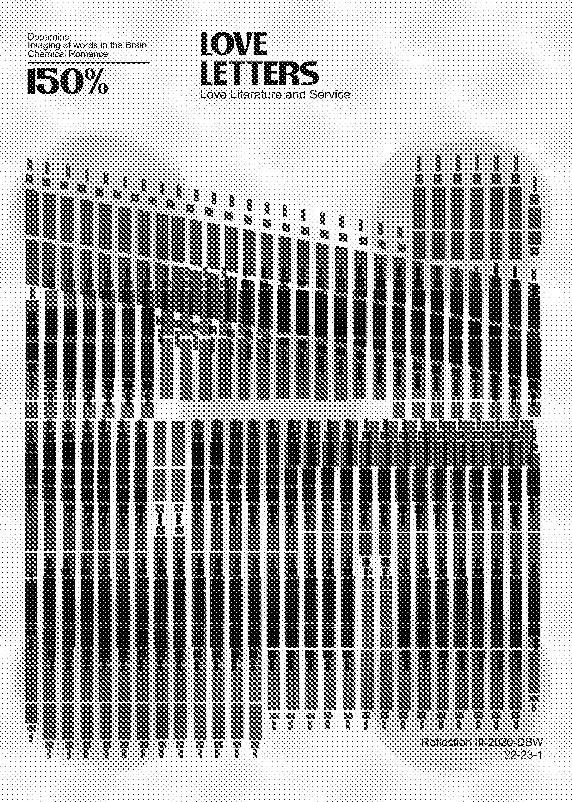
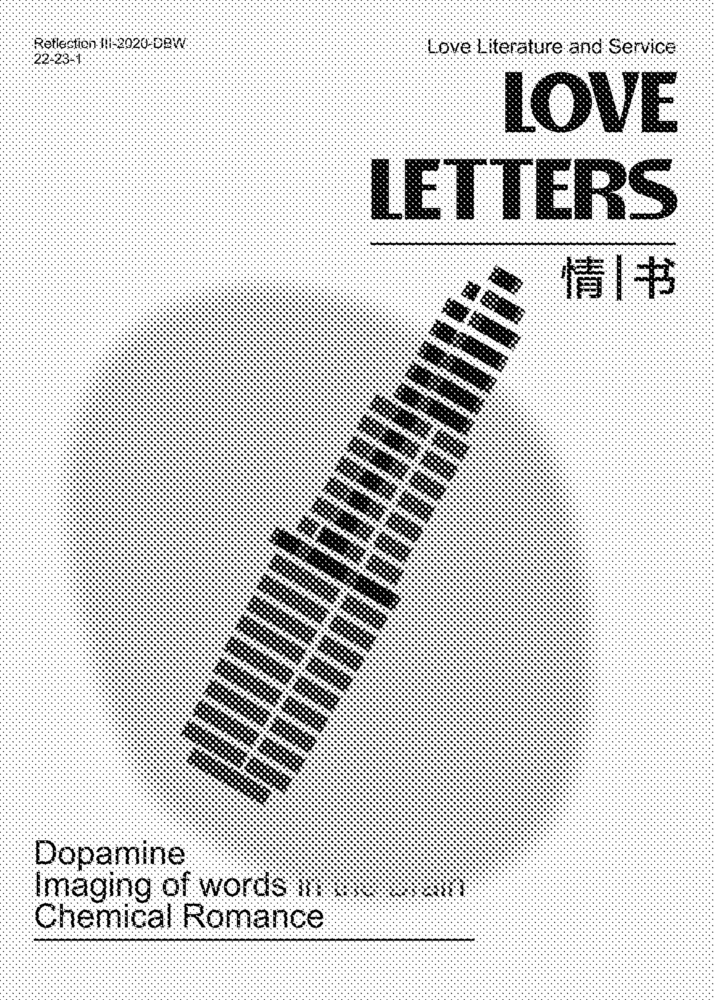
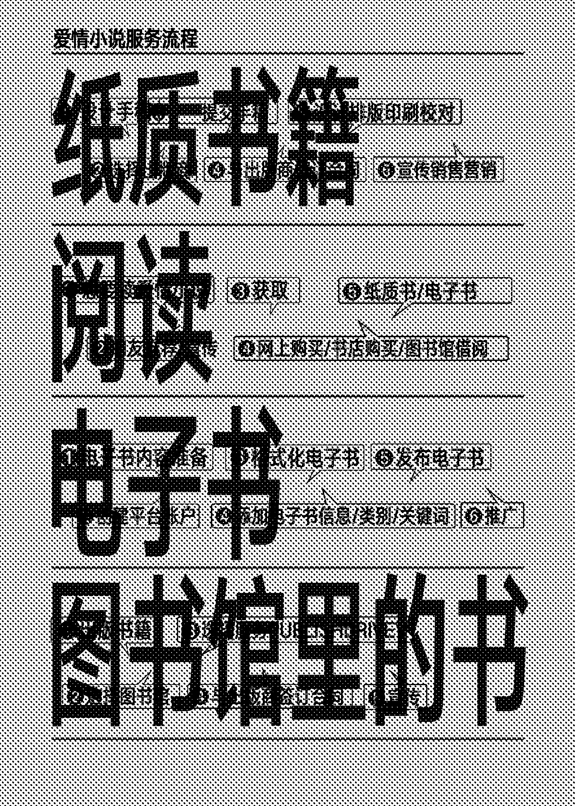

Outside of textbooks, I have read probably the most romance novels. I also understand that the subject matter is clichéd, and this category has been frowned upon by critics both at home and abroad, and some people don't even count romance literature as a literary category. But one can't help but fall into the cliché that romance/erotic ($1.44 billion), crime/suspense ($728.2 million), religious/inspirational ($720 million), science fiction/fantasy ($590.2 million), and horror ($79.6 million) are at the top of the list in terms of average annual book sales of all types. According to statistics, it accounted for 58.2% of the market in 1999. 84% of romance readers are women, so it can be said that he is a book written by women for women, in which the author builds an ideal love with ambiguous words that make many readers light up and read at night. You know that when you are reading love texts, your brain is putting on a fireworks show inside. The moving plot and lingering emotions in romance novels stimulate your cerebral cortex to secrete substances called dopamine, serotonin and oxytocin. When these three reactions combine, they create an intense cocktail of empathy, emotion, action and pleasure, which is why you'll want to stay up all night reading a romance novel.
Chocolate will temporarily raise your dopamine levels to 1.5 times the baseline level, and the effect will disappear after a few minutes or even seconds; inhaled nicotine, such as cigarettes, will raise dopamine levels to more than 2.5 times
the baseline level, and this effect is very unhealthy; cocaine will raise dopamine levels in the blood to 2.5 times the baseline level, and amphetamines (stimulants) will raise dopamine levels in the blood to more than 10 times the baseline level. stimulants) will raise dopamine levels in the blood to more than ten times the baseline level; love, whether it's a real relationship or a brief moment of pleasure in romance literature, will raise dopamine levels to more than 1.5 times the baseline level. Reading a romance novel is like having a chemical reaction inside your skull.
Romance novels serve the human process, from the reader's desire to read a book to the completion of the book, the lasting memory and impact of the book on the person. Each process extends to the role played by other actors such as publishers, authors, etc. in the process.